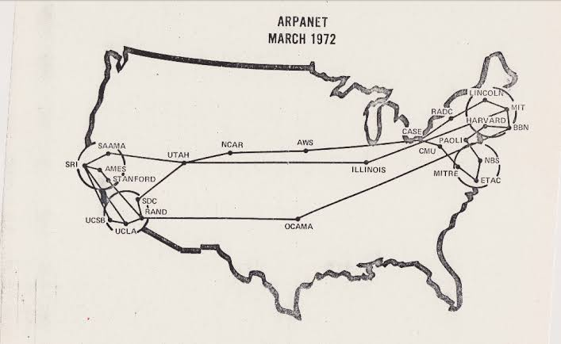

60s- 70s
Inicio
80´s
90's
2000´s
1969: DARPA planifica la creación de una red que conecta computadoras

1972 ARPANET Fue una red de computadoras creada por encargo del Departamento
de Defensa de los Estados Unidos para utilizarla como medio de comunicación
entre las diferentes instituciones académicas y estatales. En 1972 ARPANET
se presentó en la First International Conference on Computers and Communication
en Washington DC.

1972 TCP/IP Fue desarrollado y demostrado por primera vez en 1972 por el Departamento
de Defensa de los Estados Unidos, ejecutándolo en ARPANET, una red de área
extensa de dicho departamento.
1976 ETHERNET En 1975 Metcalfe y Boggs describieron Ethernet en un artículo
que enviaron a Communications of the ACM (Association for Computing Machinery),
publicado en 1976. En él ya describían el uso de repetidores para aumentar
el alcance de la red. En 1977 Metcalfe, Boggs y otros dos ingenieros de Xerox
recibieron una patente por la tecnología básica de Ethernet, y en 1978 Metcalfe
y Boggs recibieron otra por el repetidor. En esta época todo el sistema Ethernet
era propiedad de Xerox.

Documento PDF